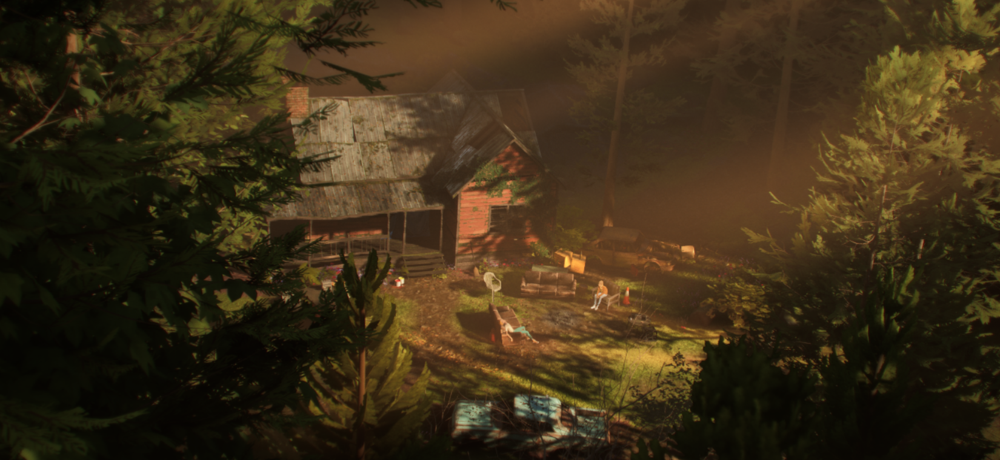
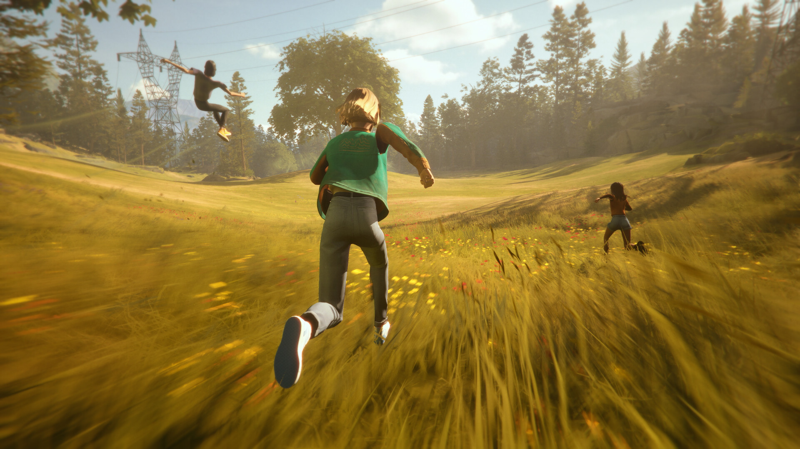
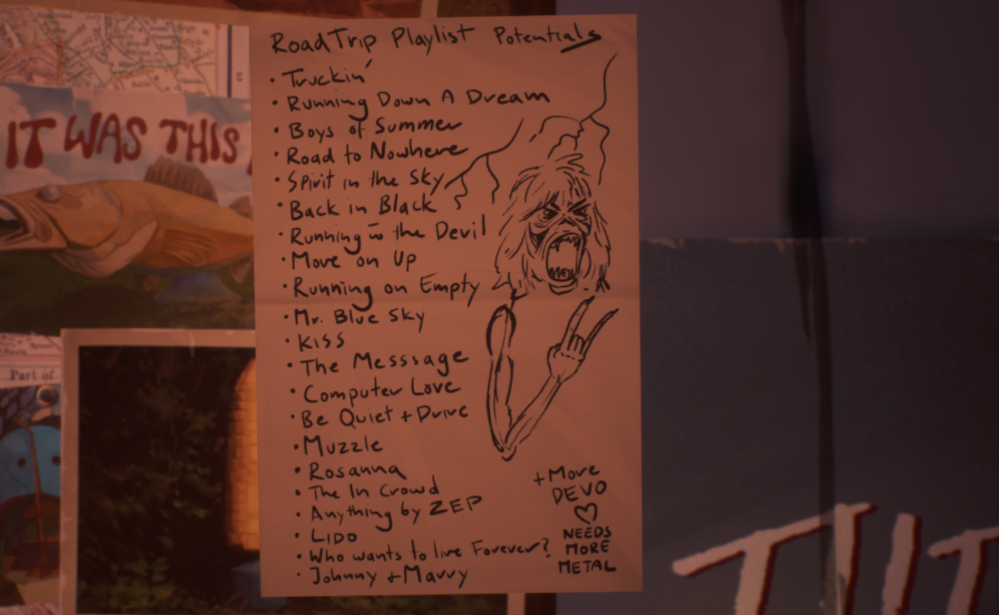
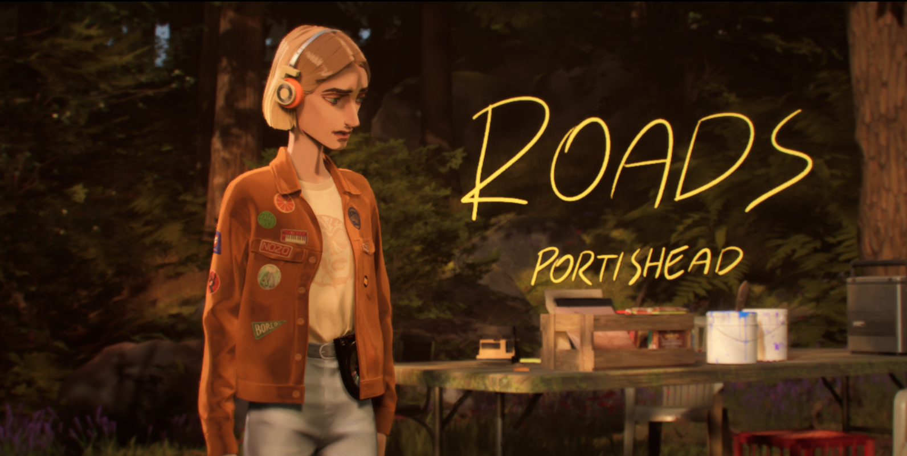
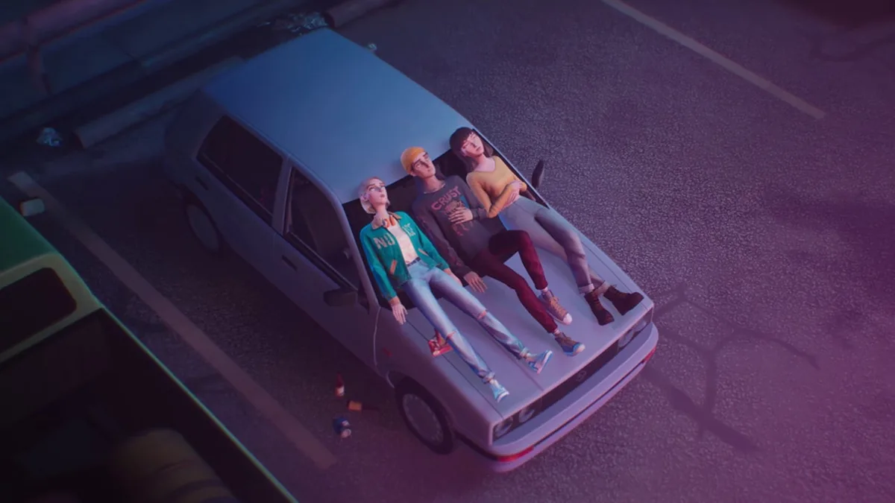

Mixtape è uscito il 7 maggio di quest'anno. Ho impiegato circa tre ore a finirlo e qualche giorno a capire cosa mi aveva fatto. Mi ha posto una domanda precisa che evitavo da anni. Ho smesso di scrivere musica personale da parecchio tempo. Questo è il tentativo di spiegare perché un piccolo videogioco indie è riuscito a farmelo capire.

Cos'è Mixtape
Lo sviluppa Beethoven and Dinosaur, lo pubblica Annapurna Interactive. Dura tre o quattro ore ed è strutturato in trenta capitoli brevi, uno per canzone. La storia è semplice e antica come l'uomo. Stacey Rockford, 17 anni, sta per trasferirsi a New York — vuole fare la music supervisor, colei che sceglie le canzoni per film e serie TV. La notte prima di partire la passa con i suoi due migliori amici, Cassandra e Slater, e per loro crea una mixtape: una collezione di 28 brani scelti per narrare la sua ultima giornata in quella cittadina.
Il gameplay è particolare. Ti ritrovi a vagare nelle stanze dei protagonisti, osservare dettagli, volare su uno skate, scappare dalla polizia su un carrello, essere regista di corse sui prati o di uno spettacolo di fuochi artificiali. La critica ricorrente è che le meccaniche siano troppo leggere. È vero — ma è una critica che fraintende. Le meccaniche non devono sfidare: servono per fare spazio alla musica, aiutarti a viverla fino in fondo.

Il gioco non ha una colonna sonora composta — ha una curatela, ha una playlist. Sono 28 brani licenziati: Joy Division, Jesus and Mary Chain, Portishead, The Cure, tutti scelti uno a uno per costruire la storia. E non fatevi spaventare dai nomi poco noti oggi. Moltissime canzoni anche a me erano sconosciute — ed è soprattutto grazie a questo che il gioco è stato più potente, guidandomi alla scoperta di piccole perle.
I requisiti per giocare a Mixtape sono semplici: devi aver voluto nella tua vita degli amici veri con cui essere te stesso, e devi aver sentito almeno una volta che la musica che ascolti parla di te. Fine. Se hai questi requisiti, prendi il controller e comincia ad ascoltare.
Il mistero della musica e le cassette
Mixtape parla del mistero della musica partendo da una constatazione apparentemente banale: una canzone degli altri può raccontarci meglio delle nostre parole. Ma poi va oltre, costruendo una storia per farti entrare nelle canzoni — e canzoni scelte per farti capire cosa la musica può fare all'uomo.

Ricordo le cassette che facevamo da ragazzi, dove raccoglievamo le canzoni migliori ascoltate in quel periodo. Ci mettevi dentro le canzoni che sentivi tue. Non serviva capire il testo — in qualche modo il loro mood entrava in te e ti descriveva, e non vedevi l'ora di farle sentire agli altri perché in fondo volevi essere capito senza dover spiegare nulla. Bastava dire: ascolta questo.
Le cassette erano da 45, 60, massimo 90 minuti — quasi nessuno si spingeva a produrre mixtape così lunghi. Dovevi scegliere meticolosamente, quelle che parlavano davvero di te. Oggi le playlist di Spotify possono durare sei ore — non c'è vera scelta, e allora non sentiamo davvero che parlano di noi. Scegliere la musica — questo davvero conta.
Stacey e il potere della scelta

Stacey Rockford lo sa da quando ha 13 anni. È per questo che ha deciso di diventare una music supervisor — il mestiere di chi crede che la musica degli altri possa diventare la voce giusta in quel momento. E Stacey è bravissima, lo dice lei stessa senza falsa modestia. Non è arroganza: è la descrizione precisa di un potere reale.
La musica agisce sull'altro prima che l'altro possa difendersi. È proprio per questo che chi lavora con la musica ha una responsabilità che non può ignorare. Pensate a certe pubblicità che usano una canzone amata per vendervi qualcosa. Pensate ai regimi che hanno piegato inni popolari per il consenso. Pensate a chi mette musica ad alto volume in un luogo pubblico senza che nessuno l'abbia chiesto. In tutti questi casi si abusa del potere della musica.
Per Stacey questo è il peccato originale — e il gioco lo dice attraverso una scena apparentemente banale, quando la compagnia parla di motociclette e a lei non piacciono perché i proprietari sembrano pensare di avere il diritto di fare rumore. Non è una battuta: è una dichiarazione di poetica. Il suono occupa spazio, occupa tempo che si pretende dagli altri. Per questo ogni canzone della sua mixtape deve guadagnarsi il posto — non deve essere necessariamente bella, deve essere vera per quel momento, per la persona che ascolta, per lei che l'ha scelta.
La memoria come mixtape
Il gioco è pieno di momenti che sembrano secondari ma non lo sono. Nel capitolo del Parco preistorico, un flashback porta Stacey e i suoi amici in un parco abbandonato, di nascosto, di notte. Il gioco ti chiede di visitarlo con loro e fotografarlo mentre parlano e ridono. In quel momento Cassandra dice una cosa semplice — fermatevi un secondo su di essa.
I ricordi non sono archivi. Non conservano la realtà dei fatti come sono avvenuti — sono il racconto nostro del fatto stesso. La memoria è come una fotografia: il fotografo sceglie l'inquadratura, il formato, l'apertura dell'otturatore. Tutti filtri imposti sul reale per sublimarlo e renderlo personale.
In quel momento del gioco siete chiamati a fotografare la scorribanda notturna — e una fotografia non è mai la realtà. Voi state raccontando, non vivendo. La memoria, ci dice Cassandra, è la stessa cosa: una selezione operata da chi siamo adesso su ciò che siamo stati. Anche le mixtape funzionano così. Con le sue scelte musicali Stacey non sta semplicemente trovando le canzoni giuste per l'ultima notte — sta scegliendo come ricordare quella notte. Lei è la regista dei ricordi. La musica è il ciak in campo.
Slater e la paura di guarire
Slater è il terzo del trio — scrive musica per se stesso da anni con il suo sintetizzatore anni Novanta, e nessuno ha mai sentito nulla di suo. Stacey vorrebbe ascoltare, ma lui rifiuta sempre. La sua non è modestia, non è timidezza. È la consapevolezza precisa di cosa significa scrivere musica vera e farla ascoltare a qualcuno sensibile come Stacey.
Far sentire la tua musica a qualcuno è come consegnargli le chiavi di casa. Un ascolto equivale a una confessione — e una confessione, una volta detta, non può essere rimangiata.

Finché Stacey litiga con Cassandra — una lite vera, di quelle che ti fanno pensare di aver perso qualcuno per sempre. Slater allora decide di fare l'unica cosa che sa può voltarle la giornata. Prende una cassetta con un suo personale b-side, un'odissea per sintetizzatore di dieci minuti che non aveva mai fatto sentire a nessuno, e schiaccia play. Non perché gliel'avesse chiesto lei. Non perché abbia smesso di avere paura. Ma perché lei stava male e lui non aveva altro da darle. Non aveva altro che la sua musica, la sua luce.
Quando scrivi musica veramente per te stesso, quando la concludi, senti che ti ha curato — perché per scriverla hai dovuto lottare, studiare, osare. Quando la riascolti ti vedi nudo, circondato dal buio, ma illuminato dal calore di quelle tue note. Slater dona la sua luce alla sua amica ferita. Entrambi con la musica cercano di parlare agli altri — ma nella realtà vogliono capire chi sono loro stessi.
La domanda che evitavo
Perché ho smesso di scrivere musica per me? Me lo sono sempre chiesto con una risposta pronta: non ho più nulla da dire veramente, la mia vita è piena di preoccupazioni, impegni, problemi, non ho tempo di pensare a me stesso. Ma se fosse vero, non sarei qui su YouTube a scrivere di me stesso. Qui ci metto la mia esperienza, le mie riflessioni. Scrivo continuamente — ma non scrivo più musica.
Forse è per paura. Paura di cercare quelle note che costringono a guardarti dentro. Paura di camminare nel buio verso una nuova luce. Paura di guarire.
La musica è il nostro più grande specchio interiore — uno specchio che insieme riflette e rivela. Uno specchio che ognuno di noi per natura porta fissato sul petto. E allora lo specchio che hai fissato sul petto è il segnale di un patto profondo: tu mi guardi mentre io ti guardo dentro. E se ti guardo dentro mi vedo (Antonio Porta).
Tutto questo è Mixtape.